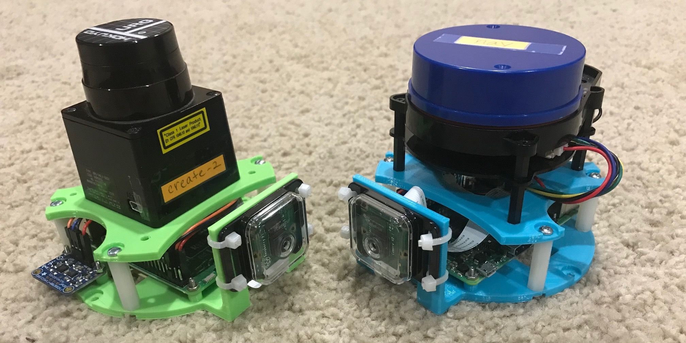

still under development
This was originally part of another (much more complex) robot I was building. I decided to break it out into its own repo.

This is designed using OpenScad which is a solid modeller. There are printable 3d stl files available in the mechanical directory along with the scad file that created them. You will also need:
You will need:
You will need to install the following Python 3 libraries using pip:
You will also need OpenCV 4.x to use this. Unfortunately for the Raspberry Pi, at the time of this writting, there is no easy way to do this. You will have to build/compile it yourself for Python 3.